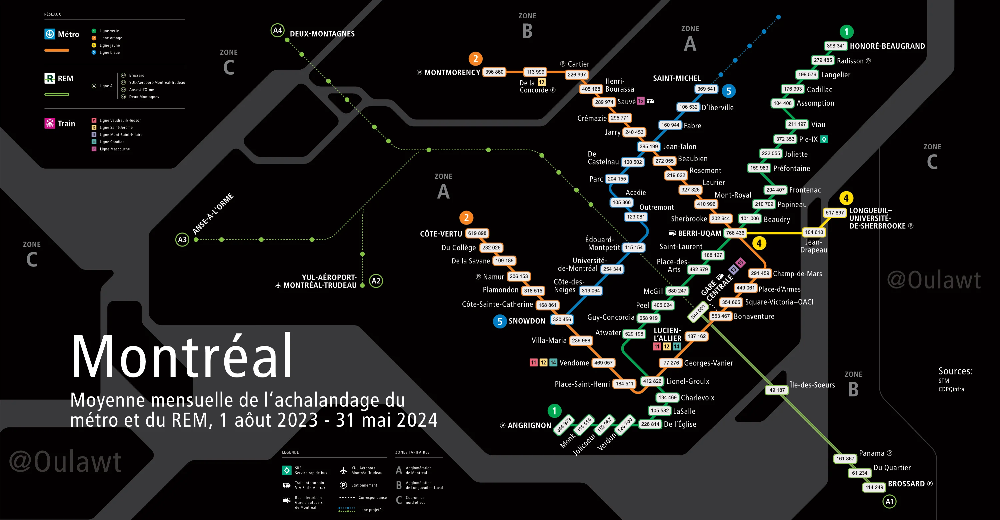
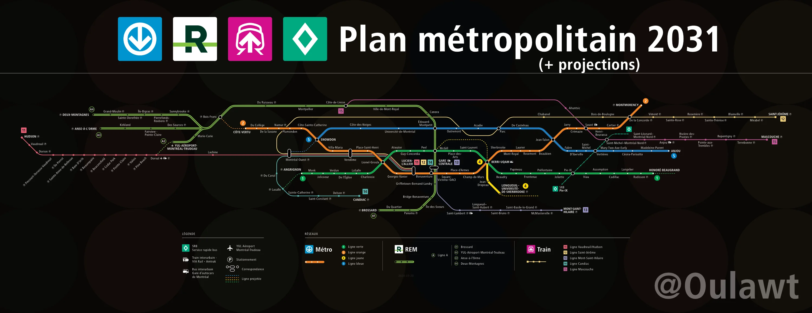
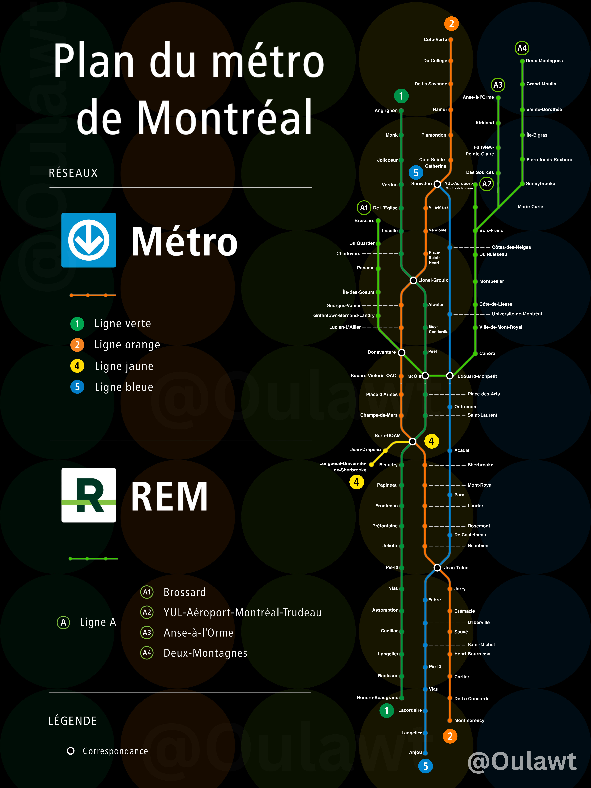

01
Un réseau, plusieurs modes
Le réseau de transport collectif de Montréal rassemble plusieurs modes de transport intégrés, dont le métro, le REM, exo et les bus.
Montréal, réimaginée
Le réseau de transport collectif de Montréal représenté sous différents angles de visualisation de données et de design cartographique.
01
Le réseau de transport collectif de Montréal rassemble plusieurs modes de transport intégrés, dont le métro, le REM, exo et les bus.
02
Le même réseau représenté à travers différentes approches cartographiques et analytiques.
03
Trois cartes publiées, avec d'autres à venir.
Découvrez les cartes ci-dessous

06 · 2025
Montréal — Canada
Visualisation de l'achalandage mensuel moyen des stations du métro et du REM, du 1er août 2023 au 31 mai 2024.

09 · 2025
Montréal — Canada
Une représentation horizontale du réseau de transport collectif de Montréal, réunissant le métro, le REM, les trains d'exo et le SRB.

02 · 2024
Montréal — Canada
Une représentation verticaledu métro et du REM, illustrant la connectivité entre les lignes et les stations.
D'autres cartes à venir.
À propos de Métromorphe